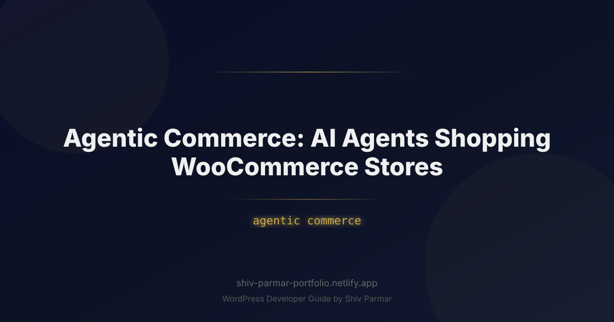

Agentic Commerce: AI Agents Shopping WooCommerce | Shiv Parmar
Table of Contents
The landscape of digital retail is undergoing its most radical transformation since the transition from brick-and-mortar storefronts to the World Wide Web. For two decades, digital storefronts have been engineered entirely around human psychology: sticky navigation bars, persuasive copywriting, urgency badges, high-contrast "Add to Cart" buttons, and frictionless single-page checkouts. However, the paradigm is shifting. In this emerging era, the primary visitor browsing your catalog, comparing your specifications, and executing transactions may not possess human eyes or touch screens. Instead, it will be an autonomous software agent.
Agentic commerce represents the shift from passive, consumer-driven web browsing to delegated, autonomous AI shopping. Driven by advanced large language models (LLMs), tool-use capabilities, and protocols like Anthropic's Model Context Protocol (MCP), digital assistants are evolving from simple conversational bots into goal-oriented agents capable of executing multi-step workflows. A consumer no longer spends three hours reading reviews and filtering variants across dozens of tabs; they simply instruct their AI: "Find me a sustainable, water-resistant commuter backpack under $150 that fits a 16-inch laptop, and purchase it using my default card if it can arrive by Thursday."
For merchants operating on WordPress and WooCommerce, this transition introduces both an existential risk and an unprecedented opportunity. WooCommerce powers over 30% of all top-tier online stores globally. Yet, the vast majority of these storefronts are fundamentally illegible or inaccessible to autonomous agents due to heavy client-side JavaScript rendering, aggressive bot-blocking walls, missing semantic data, and brittle checkout flows. Preparing your store for WooCommerce AI integration requires a holistic re-engineering of how product data is structured, exposed, and transacted. This guide will walk you through the technical foundations and architectural strategies required to turn your WooCommerce store into an agent-friendly, high-conversion node in the autonomous commerce network.
What is Agentic Commerce?
Agentic commerce is the autonomous execution of commercial transactions by artificial intelligence agents acting on behalf of human consumers or enterprise buyers. Unlike traditional e-commerce—where a human manually navigates a graphical user interface (GUI)—or early conversational commerce—where a human chats with a customer service bot on a website—agentic commerce delegates the entire discovery, evaluation, negotiation, and checkout lifecycle to an autonomous program.
At an architectural level, an AI shopping agent functions through a continuous loop of reasoning, tool invocation, and state validation. When tasked with a commercial objective, the agent decomposes the user's high-level intent into deterministic operational steps:
- Intent Parsing: Deconstructing complex, multi-variable requests into explicit criteria (e.g., budget constraints, sizing, material composition, delivery windows).
- Discovery & Catalog Ingestion: Querying search engines, marketplaces, and direct store APIs or structured semantic feeds (JSON-LD) to retrieve candidates.
- Evaluation & Filtering: Running cross-merchant comparisons, parsing customer review sentiment, auditing warranty details, and cross-referencing real-time inventory levels.
- Negotiation & Incentive Retrieval: Locating dynamic coupons, volume discounts, or programmatic affiliate incentives applicable to the cart.
- Transaction Execution: Interfacing with tokenized payment gateways or delegated checkout APIs to complete the purchase without human visual intervention.
| Dimension | Traditional E-Commerce | Conversational E-Commerce | Agentic Commerce |
|---|---|---|---|
| Primary Actor | Human Consumer | Human guided by on-site chatbot | Autonomous AI Agent |
| Target Interface | Visual Web GUI (HTML/CSS/JS) | Chat Widget Window | APIs, JSON-LD, MCP Tools |
| Decision Latency | Hours to Days (browsing, comparing) | Minutes to Hours | Milliseconds to Seconds |
| Conversion Factor | Emotional triggers, UX, imagery | Scripted bot responses, prompts | Deterministic data, price, SLA, inventory |
In this ecosystem, the traditional marketing funnels of attention, interest, desire, and action (AIDA) compress instantly. AI agents do not respond to colorful banners, scarcity timers, or evocative lifestyle photography. They respond to machine-readable facts: accurate parameters, guaranteed delivery timestamps, verified customer ratings, transparent return policies, and high-availability endpoints that return deterministic data.
Why Agentic Commerce Matters in 2026
The pivot toward autonomous shopping is not a speculative horizon; it is an active market transformation driven by the confluence of three structural shifts in consumer technology and software architecture.
First, personal operating systems have integrated systemic AI agents. Operating systems now feature multimodal agents capable of orchestrating actions across applications via screen-reading and API execution. Consumers are increasingly treating personal assistants like OpenAI's Operator, Apple Intelligence, and Google Gemini as operational proxies. Delegating tedious transactional tasks—such as reordering household essentials, booking travel, or researching complex technical purchases—is rapidly becoming the standard default behavior.
Second, traditional search engine optimization (SEO) is bifurcating. While organic web search remains vital, consumers are migrating query volume to Generative Search Engines (GSE) and Answer Engines. These engines do not simply return a list of ten blue links for a user to click; they construct answers and directly spawn transactional workflows. If your WooCommerce store cannot be ingested, indexed, and programmatically manipulated by an agent acting within Perplexity, ChatGPT, or Claude, your store simply ceases to exist within that buyer's decision matrix.
Third, machine-to-machine (M2M) purchasing is fundamentally rewiring unit economics. Autonomous agents operate without emotional bias. They do not suffer from cognitive fatigue, nor do they fall for arbitrary pricing inconsistencies. If your WooCommerce store has a superior product but obfuscates its shipping cost or fails to expose exact dimensional data, the agent will instantly bypass your listing in favor of a competitor providing transparent, structured data. Stores optimized for WooCommerce AI agents will unlock hyper-efficient, programmatic sales channels that operate continuously, generating transactions with zero human-facing marketing expenditure.
Step-by-Step Guide to Preparing WooCommerce for AI Agents
Transforming a legacy WooCommerce store into an agentic-ready platform requires a layered technical approach. You must ensure that agents can discover your catalog, query product variants, evaluate stock status deterministically, and finalize transactions via standardized APIs.
1. Implementing Exhaustive Semantic Schemas (JSON-LD)
While human users consume HTML rendered in a browser, LLM-based shopping agents consume structured data graphs. Default WooCommerce themes output baseline Schema.org markup, but it is frequently incomplete, lacking variant-specific pricing, physical dimensions, energy ratings, return policies, and real-time inventory statuses.
To capture AI traffic, you must enrich your product pages with fully declared, deeply nested JSON-LD schema graphs using hooks in your theme's functions.php or a custom site plugin. Below is an implementation showing how to inject robust, agent-legible schema directly into your product header:
/**
* Inject enriched JSON-LD Schema for AI Shopping Agents
*/
add_action('wp_head', 'inject_agentic_product_schema', 10);
function inject_agentic_product_schema() {
if (!is_product()) {
return;
}
global $product;
if (!is_a($product, 'WC_Product')) {
return;
}
$schema = [
'@context' => 'https://schema.org/',
'@type' => 'Product',
'name' => $product->get_name(),
'image' => wp_get_attachment_url($product->get_image_id()),
'description' => wp_strip_all_tags($product->get_short_description() ?: $product->get_description()),
'sku' => $product->get_sku(),
'mpn' => $product->get_meta('_mpn') ?: $product->get_sku(),
'brand' => [
'@type' => 'Brand',
'name' => $product->get_meta('_brand') ?: get_bloginfo('name')
],
'offers' => [
'@type' => 'Offer',
'url' => get_permalink($product->get_id()),
'priceCurrency' => get_woocommerce_currency(),
'price' => $product->get_price(),
'priceValidUntil' => date('Y-12-31', strtotime('+1 year')),
'itemCondition' => 'https://schema.org/NewCondition',
'availability' => $product->is_in_stock() ? 'https://schema.org/InStock' : 'https://schema.org/OutOfStock',
'seller' => [
'@type' => 'Organization',
'name' => get_bloginfo('name')
],
'shippingDetails' => [
'@type' => 'OfferShippingDetails',
'shippingRate' => [
'@type' => 'MonetaryAmount',
'value' => '0.00',
'currency' => get_woocommerce_currency()
],
'deliveryTime' => [
'@type' => 'ShippingDeliveryTime',
'handlingTime' => [
'@type' => 'QuantitativeValue',
'minValue' => 0,
'maxValue' => 1,
'unitCode' => 'DAY'
],
'transitTime' => [
'@type' => 'QuantitativeValue',
'minValue' => 2,
'maxValue' => 4,
'unitCode' => 'DAY'
]
]
],
'hasMerchantReturnPolicy' => [
'@type' => 'MerchantReturnPolicy',
'applicableCountry' => 'US',
'returnPolicyCategory' => 'https://schema.org/MerchantReturnFiniteReturnWindow',
'merchantReturnDays' => 30,
'returnMethod' => 'https://schema.org/ReturnByMail',
'returnFees' => 'https://schema.org/FreeReturn'
]
]
];
echo '<script type="application/ld+json">' . wp_json_encode($schema, JSON_UNESCAPED_SLASHES | JSON_PRETTY_PRINT) . '</script>' . "\n";
}
This code explicitly declares shipping turnaround times, handling windows, and return parameters. When an AI shopping assistant evaluates three identical items across different sites, this deterministic payload gives your store a significant advantage over competitors whose shipping terms are buried in unparsed footer links.
2. Exposing High-Performance, Agent-Specific REST Endpoints
The standard WooCommerce REST API (/wp-json/wc/v3/) is designed for administrative dashboards, mobile app backends, and ERP integrations. It typically enforces cookie-based authentication, nonces, or consumer key/secret pairs via basic auth. Furthermore, core product endpoints return massive JSON payloads packed with visual metadata, layout settings, and dashboard flags that exhaust the context window of LLM reasoning engines.
To accommodate autonomous agents, you should register lightweight, publicly accessible (or tokenized) agent discovery endpoints that return strictly token-efficient, semantic payloads containing only the data points an AI agent needs to evaluate an item.
/**
* Register lightweight, AI-optimized REST API endpoint
*/
add_action('rest_api_init', function () {
register_rest_route('ai/v1', '/search', [
'methods' => 'GET',
'callback' => 'handle_ai_agent_product_search',
'permission_callback' => '__return_true',
]);
});
function handle_ai_agent_product_search(WP_REST_Request $request) {
$query = sanitize_text_field($request->get_param('q'));
$max_price = $request->get_param('max_price') ? floatval($request->get_param('max_price')) : null;
$args = [
'status' => 'publish',
'limit' => 10,
's' => $query,
];
if ($max_price) {
$args['max_price'] = $max_price;
}
$products = wc_get_products($args);
$response = [];
foreach ($products as $prod) {
$response[] = [
'id' => $prod->get_id(),
'name' => $prod->get_name(),
'sku' => $prod->get_sku(),
'price' => floatval($prod->get_price()),
'currency' => get_woocommerce_currency(),
'in_stock' => $prod->is_in_stock(),
'stock_quantity' => $prod->get_stock_quantity(),
'specs' => [
'weight' => $prod->get_weight(),
'dimensions' => $prod->get_dimensions(false),
'attributes' => $prod->get_attributes(),
],
'url' => get_permalink($prod->get_id()),
'checkout_url' => site_url('/checkout/?add-to-cart=' . $prod->get_id()),
];
}
return new WP_REST_Response([
'status' => 'success',
'count' => count($response),
'results' => $response
], 200);
}
This endpoint strips away layout data and focuses strictly on functional values: dimensions, real-time inventory count, price, and a direct parameterized cart injection URL. Agents can parse this payload in a single forward pass with minimal token consumption.
3. Bridging WooCommerce with the Model Context Protocol (MCP)
The industry is rapidly consolidating around Anthropic's open-source Model Context Protocol (MCP). MCP provides an open standard for LLMs running on desktop machines, local environments, or cloud hosts to dynamically discover external tools and databases.
Instead of relying on web scraping or manual API configurations, you can run an MCP server alongside your WooCommerce deployment. This server exposes declarative functions that agents can invoke natively inside their reasoning loops. Common tool declarations include:
search_catalog(query, max_price, category)get_product_availability(sku, postal_code)validate_coupon_code(code, cart_total)create_intent_cart(line_items, shipping_address)
Below is a conceptual architecture diagram outlining the interaction between an autonomous AI agent, an MCP server layer, and your WooCommerce installation:
| Consumer AI Agent |
| (e.g., Claude Desktop, Operator) |
+---------------------------------+---------------------------------+
|
| 1. Discovers tools via MCP spec
v
+-------------------------------------------------------------------+
| WooCommerce MCP Server |
| - search_products() |
| - verify_stock() |
| - reserve_checkout_session() |
+---------------------------------+---------------------------------+
|
| 2. Executes optimized SQL / REST
v
+-------------------------------------------------------------------+
| WooCommerce Headless Layer |
| (WordPress Engine + HPOS + Redis Object Cache) |
+-------------------------------------------------------------------+
By defining your WooCommerce functions within an MCP server, any compliant agent can query and manipulate your store reliably without needing to parse volatile visual elements on the frontend.
4. Architecting Frictionless, Programmatic Checkout
The single greatest bottleneck for agentic commerce is the checkout phase. Traditional checkouts feature CAPTCHAs, two-factor SMS prompts, and complex multi-step address verifications designed to deter automated systems. However, autonomous agents cannot solve visual puzzles without breaking down or triggering security walls.
To enable agentic checkouts while defending against fraudulent operations, merchants must establish specialized checkout pathways that utilize delegated authority mechanisms, such as tokenized identity wallets and secure payment intents.
| Checkout Architecture | Mechanism | Pros | Cons |
|---|---|---|---|
| Pre-Populated Handoff | Agent compiles cart and hands user a unique, one-click authorization link. | Zero fraud risk; utilizes existing checkout and fraud tools. | Requires human presence; breaks full autonomy. |
| Tokenized Delegated Vault | Agent presents an ephemeral Stripe/Apple Pay cryptogram via API. | Completely autonomous; highly secure; fast completion. | Requires advanced gateway configurations and custom endpoints. |
| OAuth Customer Delegated Access | Consumer grants the agent an OAuth scope tied to their registered WooCommerce profile. | Leverages saved credit cards and stored addresses safely. | Limited to existing, registered account holders. |
For most stores preparing for agentic transactions today, the Pre-Populated Handoff model is the most practical stepping stone. The agent performs discovery, verification, and cart creation, then generates a cryptographically signed magic link that redirects the human user directly to the final confirmation screen with their payment details pre-filled.
Best Practices for WooCommerce AI Agent Optimization
To win programmatic conversions from shopping engines, your backend must be optimized specifically for machine consumption, speed, and real-time reliability.
1. Migrate to High-Performance Order Storage (HPOS)
Legacy WooCommerce sites maintain orders and product records within the monolithic wp_posts and wp_postmeta tables. When dozens of AI agents query catalog metadata concurrently, this archaic schema degrades quickly, leading to database lockups and elevated latency. Ensure your store runs WooCommerce's High-Performance Order Storage (HPOS), which isolates transactional records into dedicated relational tables, substantially reducing query execution overhead.
2. Deploy Server-Side Vector Embeddings for Product Search
Traditional WooCommerce search relies on exact string matches via SQL LIKE '%query%' queries, or basic full-text search. This breaks down when an agent queries your catalog using conceptual language (e.g., "ergonomic setup for chronic lower back pain"). Implement semantic vector search on your catalog by generating vector embeddings (via OpenAI text-embedding-3-small or similar) for your product titles, descriptions, and attributes. Store these in a vector index (such as Pinecone, Qdrant, or a local pgvector instance) to allow agents to match products based on underlying semantic intent rather than exact keyword overlap.
3. Maintain Strict Deterministic Stock & Price Signals
Nothing degrades a store's reputation in an AI agent's decision tree faster than speculative stock levels. If an agent executes an order only to receive an out-of-stock backorder notification, its underlying reinforcement learning feedback loops will lower your store's confidence ranking for future queries. Implement persistent Redis object caching alongside atomic inventory decrements to guarantee that stock levels exposed via APIs and Schema match the physical shelf reality at all times.
4. Expose Machine-Readable Policies via robots.txt and Markdown
Modern LLMs actively look for markdown documentation detailing machine policies. Implement a clear /agent-policies.md or /.well-known/ai-commerce.json file on your domain, explicitly mapping out your search endpoints, accepted payment protocols, affiliate structures, and rate-limiting tiers. Allow access to your catalog feeds within your robots.txt file specifically for reputable enterprise AI user agents (such as GPTBot, Claude-Web, and PerplexityBot) while restricting abusive headless scrapers.
Common Mistakes to Avoid
As store owners rush to embrace AI shopping, they frequently fall into architectural traps that either break their store performance or actively alienate autonomous buyers.
1. Treating All Autonomous Agents as Malicious Scrapers
The most pervasive error among WooCommerce administrators is applying indiscriminate Cloudflare or Wordfence firewall rules that hit every automated visitor with an aggressive JavaScript challenge or CAPTCHA screen. While shielding your store from malicious scrapers, credential stuffers, and content thieves is critical, blocking all non-human user-agents completely severs your catalog from agentic discovery networks. Instead of blanket IP bans, implement modern Bot Management solutions that differentiate between harmful bots and verified AI agents acting on behalf of paying consumers.
2. Relying on Client-Side Rendering (CSR) for Critical Attributes
Many modern headless WooCommerce stores render product information, reviews, and dynamic pricing client-side using JavaScript frameworks (React, Vue) after the initial HTML payload has loaded. Many discovery agents fetch the raw response without executing the client-side JavaScript bundle to conserve compute. If your product specs, variant options, or prices depend on dynamic client-side rendering, the agent simply sees an empty shell and skips your listing. Always ensure complete product details are baked directly into the initial server-side rendered HTML response or exposed via explicit REST endpoints.
3. Obfuscating Ancillary Fees Until the Final Checkout Step
Human shoppers are frequently subjected to "drip pricing," where shipping costs, handling fees, and regional taxes are concealed until the final checkout page. AI agents actively penalize this pattern. If an agent has a hard limit of $100 and builds a cart for a $95 item, only to discover an unstated $15 handling fee injected at the final API handshake, the agent will instantly abort the transaction and mark your endpoint as unreliable. Keep shipping rates and tax calculation heuristics transparent and queryable via your pre-checkout endpoints.
4. Neglecting Token Economics in API Payloads
Developers writing custom API endpoints for WooCommerce often serialize entire WordPress objects, returning gigabytes of extraneous data containing author IDs, ping statuses, visual layout classes, and deep-link arrays. Autonomous agents parse every single byte of that response into their working context window—a process that costs real money in computational tokens and slows down execution. Bulky, unstructured API responses introduce latency, and agents will prioritize stores that return minimal, highly concentrated payloads that execute quickly.
5. Failing to Isolate Pricing Rules for Machine Transactions
If you offer dynamic discounting—such as BOGO offers, multi-buy savings, or coupon vouchers—ensure these rules can be programmatically verified and calculated via API before the final transaction payload is compiled. If an agent cannot programmatically validate whether a promotional coupon is applicable before attempting to submit a checkout payload, it will skip the promotion entirely or abandon the session due to a failure to confirm the target pricing threshold.
Conclusion
This guide covered everything you need to know about Agentic Commerce: AI Agents Shopping WooCommerce Stores. By following these steps, you can implement these solutions on your WordPress site today.
If you need help with WordPress development, WooCommerce, or performance optimization, feel free to reach out. I work with clients worldwide and deliver high-quality results.